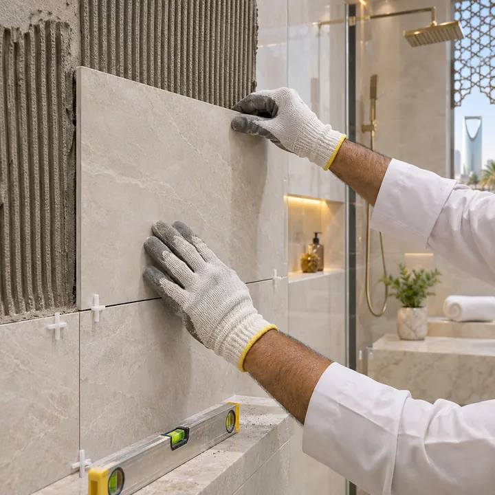

تركيب البلاط والسيراميك
تركيب بلاط مرتب للمساحات التي تعيش فيها
نركب السيراميك والبورسلين للأرضيات والجدران، ونصلح بلاط الحمامات والمطابخ في الدمام والمدن المجاورة.
نخدم الدمام، سيهات، الظهران، القطيف، الجبيل والخبر

تركيب البلاط والسيراميك
ما الذي يمكننا تنفيذه؟
أخبرنا بنوع البلاط ومساحة العمل، أو أرسل صورة للمكان لنفهم المطلوب.
01
أرضيات سيراميك وبورسلين
تركيب البلاط للأرضيات السكنية والتجارية مع الاهتمام بتوزيع القطع والتشطيب.
02
جدران الحمامات والمطابخ
تركيب بلاط الجدران في المساحات التي تحتاج إلى سطح عملي وسهل التنظيف.
03
إصلاح البلاط
إصلاح البلاط المتضرر في الحمامات والمطابخ بحسب حالة المكان.
جميع الخدمات